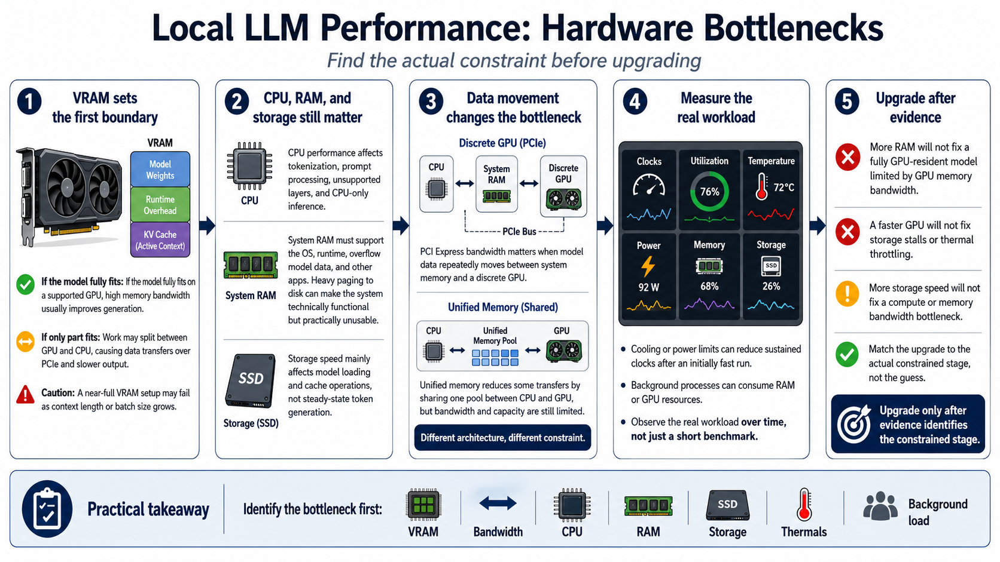

Hardware Bottlenecks
Connecting to LMS... Progress: in progress

Narration
VRAM often sets the first boundary. It must hold model weights, runtime overhead, and the key-value cache used by active context. When the model fits completely on a supported GPU, generation usually benefits from high memory bandwidth. If only part fits, the runtime may split work between GPU and CPU, increasing transfers and slowing output. A model that consumes nearly all VRAM can fail as context or batch size grows.
CPU performance matters for tokenization, prompt processing, unsupported layers, and CPU-only inference. System RAM must hold the operating system, runtime, model data that does not fit on the GPU, and other applications. Heavy paging to disk can make a configuration technically functional but unusable. Storage speed affects model loading and cache operations, though it does not usually control token generation after the working set is in memory.
PCI Express bandwidth matters when model data moves repeatedly between system memory and a discrete GPU. Unified-memory systems share one memory pool between CPU and GPU, reducing some transfers but sharing bandwidth and capacity across both. Neither architecture removes limits; each changes where they appear.
Observe clocks, utilization, temperature, power, memory, and storage during the real workload. Cooling or power limits can reduce sustained clocks after an initially fast run. Background processes can consume RAM or GPU resources. Upgrade only after evidence identifies the constrained stage. More RAM will not fix a fully GPU-resident model limited by GPU memory bandwidth, and a faster GPU will not fix a workload stalled on storage or thermal throttling.